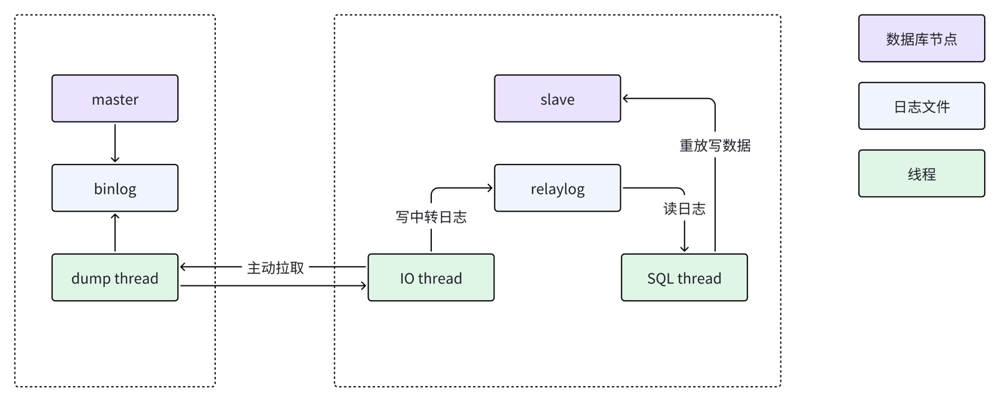
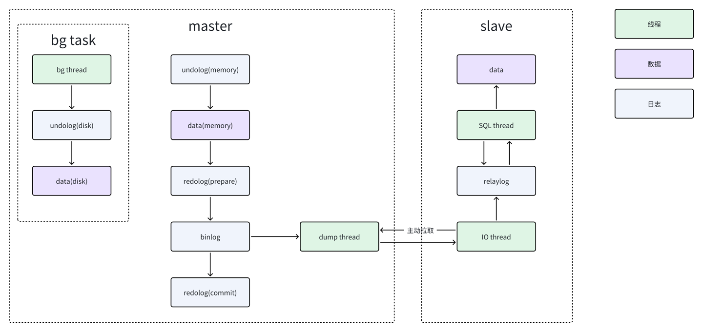

MySQL性能优化cheatsheet。
SQL执行过程
- 客户端发送一条查询给服务器；
- 服务器通过权限检查之后，先会检查查询缓存，如果命中了缓存，则立即返回存储在缓存中的结果。否则进入下一阶段；
- 服务器端进行
SQL解析、预处理，再由优化器根据该SQL所涉及到的数据表的统计信息进行计算，生成对应的执行计划； MySQL根据优化器生成的执行计划，调用存储引擎的API来执行查询；- 将结果返回给客户端。

SQL执行的最大瓶颈在于磁盘的IO，即数据的读取；不同SQL的写法，会造成不同的执行计划的执行，而不同的执行计划在IO的上面临完全不一样的数量级，从而造成性能的差距。
所以，优化SQL，其实就是让查询优化器根据我们的计划选择匹配的执行计划，来减少查询中产生的IO。
schema(表结构)对性能的影响
-
冗余数据的处理； 适当的数据冗余可以提高系统的整体查询性能(项目中有些用户信息需要经常一起拿出，可以考虑冗余信息到用户表)；
-
大表拆小表，有大数据的列单独拆成小表；
- 在一个数据库中，一般不会设计属性过多的表；
- 在一个数据库中，一般不会有超过500/1000万数据的表(拆表，按照逻辑拆分，按照业务拆分)；
- 有大数据的列单独拆成小表(富文本、静态数据)；
-
根据需求的展示设置更合理的表结构；
-
把常用属性分离成小表；
- 项目中，我们可以根据信息被使用的特征拆成多张表；
- 减少查询常用属性需要查询的列；
关系数据库的三范式：
- 第一范式（1NF）是对关系模式的基本要求，不满足第一范式（1NF）的数据库就不是关系数据库，是指数据库表的每一列都是不可分割的基本数据项，同一列中不能有多个值；
- 第二范式（2NF）要求数据库表中的每个实例或行必须可以被惟一地区分。
- 第三范式（3NF）要求一个数据库表中不包含已在其它表中已包含的非主关键字信息。 (不允许有冗余数据)
索引
核心原理
索引和索引的优化：
- 索引的原理：把无序的数据变成有序的查询（
B+树）；
结构
-
索引的物理结构：
- 数据库文件存储的位置：
my.ini配置文件中dataDir对应的数据目录中； - 每一个数据库一个文件夹；
MYISAM引擎：每一个表(table_name)–>table_name.MYI：存放的是数据表对应的索引信息和索引内容；table_name.FRM：存放的是数据表的结构信息；table_name.MYD：存放的是数据表的内容；
InnoDB引擎：每一个表(table_name)–>table_name.frm：存放的是数据表的结构信息；- 数据文件和索引文件都是统一存放在
ibdata文件中；
- 索引文件都是额外存在的，对索引的查询和维护都是需要消耗
IO的；
- 数据库文件存储的位置：
-
索引的结构：
- 默认情况下，一旦创建了一个表，这个表设置了主键，那么MySQL会自动的为这个主键创建一个unique的索引；
- 索引类型：
- Normal：普通的索引；允许一个索引值后面关联多个行值；
- UNIQUE：唯一索引；允许一个索引值后面只能有一个行值；之前对列添加唯一约束其实就是为这列添加了一个unique索引；当我们为一个表添加一个主键的时候，其实就是为这个表主键列(设置了非空约束)，并为主键列添加了一个唯一索引；
- Fulltext：全文检索，
MySQL初期的全文仅在MyISAM上支持，目前InnoDB也支持，可参考 innodb-fulltext-index，一般情况下我们不在MySQL层面实践全文搜索；
- 索引的方法(规定索引的存储结构)： (数据结构，算法基础)
b+tree：是一颗树(n叉树）：- 使用平衡树实现索引，是mysql中使用最多的索引类型；
- 在innodb中，存在两种索引类型，第一种是主键索引（primary key），在索引内容中直接保存数据的地址；
- 第二种是其他索引，在索引内容中保存的是指向主键索引的引用；
- 所以在使用innodb的时候，要尽量的使用主键索引，速度非常快；
b+tree很好地支持了范围查询，叶子节点持有下个数据页的指针；
- hash：把索引的值做hash运算，并存放到hash表中，使用较少，一般是memory引擎使用；
- 优点：因为使用hash表存储，按照常理，hash的性能比B-TREE效率高很多。
- hash索引的缺点：
- hash索引只能适用于精确的值比较，=，in，或者<>；无法使用范围查询；
- 无法使用索引排序；
利弊
索引的利弊：
-
索引的好处：
- 提高表数据的检索效率；
- 如果排序的列是索引列(如果查询的列==排序的列[并且在这列上做了索引])，大大降低排序成本；
- 在分组操作中如果分组条件是索引列，也会提高效率；
-
索引的问题：
- 索引需要额外的维护成本；
- 因为索引文件是单独存在的文件，对数据的增加，修改，删除，都会产生额外的对索引文件的操作，这些操作需要消耗额外的IO，会降低增/改/删的执行效率；
使用标准
怎么创建索引？
- 较频繁的作为查询条件的字段应该创建索引；
- 唯一性太差的字段不适合单独创建索引，即使频繁作为查询条件；
案例分析
作为索引的列，如果不能有效的区分数据，那么这个列就不适合作为索引列；比如(性别，状态不多的状态列)
举例：
1 2-- accountflow 表示账户流水 SELECT sum(amount) FROM accountflow WHERE accountType = 0；假如把
accountType作为索引列，因为accountType只有14种，所以，如果根据accountType来创建索引，最多只能按照1/14的比例过滤掉数据；但是，如果可能出现，只按照该条件查询，那我们就要考虑到其他的提升性能的方式了；方案：
- 第一种方案：单独创建一个系统摘要表；在这个表里面有一个列叫做系统总充值金额；每次充值成功，增加这个列的值；以后要查询系统总充值金额，只需要从这个系统摘要表中查询；(缺陷：如果充值频率过快，会导致表的锁定问题；)
- 第二种方案：流水一旦发生了，是不会随着时间改变的；针对这种信息，我们就可以使用增量查询（结算+增量查询）；
- 创建一张日充值表；记录每一天的充值总金额(beginDate，endDate，totalAmount)，每天使用定时器对当前的充值记录进行结算；日充值报表里面记录只能记录截止昨天的数据；
- 创建一张月充值表；记录每一个月的充值总金额(beginDate，endDate，totalAmount)，每月最后一天使用定时器对当月的充值记录进行结算(数据源从日充值报表来)；
- 要查询系统总充值，从月报表中汇总(当前月之前的总充值金额)，再从日充值报表中查询当天之前的日报表数据汇总；再从流水中查询当前截止查询时间的流水；使用另外一张当天流水表记录当天的流水；再把三个数据累加；
- 更新非常频繁的字段不适合创建索引；原因，索引有维护成本；
- 不会出现在WHERE 子句中的字段不该创建索引；
- 索引不是越多越好；(只为必要的列创建索引)
- 不管你有多少个索引，一次查询至多采用一个索引；(索引和索引之间是独立的)
- 因为索引和索引之间是独立的，所以说每一个索引都应该是单独维护的；数据的增/改/删，会导致所有的索引都要单独维护；
索引的使用限制：
-
BLOB和TEXT类型的列只能创建前缀索引； -
MySQL目前不支持函数索引（在MySQL中，索引只能是一个列的原始值，不能把列通过计算的值作为索引）； 实例：请查询1981年入职的员工：1SELECT * FROM emp WHERE year(hire_date)='1981'；问题：查询的列是在过滤之前经过了函数运算；所以，就算
hire_date作为索引，year(hire_date)也不会使用索引； 解决方案：-
1SELECT * FROM emp WHERE hire_date BETWEEN '1981-01-01' AND '1981-12-31'； - 在创建一列，这列的值是year(hire_date)，然后把这列的值作为索引；
-
-
使用不等于（!= 或者<>）的时候MySQL 无法使用索引
-
过滤字段使用了函数运算后（如abs(column)），MySQL 无法使用索引
-
Join 语句中Join 条件字段类型不一致的时候MySQL 无法使用索引
-
使用LIKE 操作的时候如果条件以通配符开始（ ‘%abc…’）MySQL 无法使用索引
- 字符串是可以用来作为索引的；
- 字符串创建的索引按照字母顺序排序；
- 如果使用LIKE，实例：SELECT * FROM userinfo WHERE realName LIKE ‘吴%’；这种情况是可以使用索引的； 但是LIKE ‘_嘉’ 或者LIKE ‘%嘉’都是不能使用索引的；
-
使用非等值查询的时候MySQL 无法使用Hash 索引
单列索引和复合索引：
- 因为一个查询一次至多只能使用一个索引，所以，如果都使用单值索引(一个列一个索引)，在数据量较大的情况下，不能很好的区分数据；
- 所以，
MySQL引入了多值索引(复合索引)； 复合索引就是由多列的值组成的索引；并且(注意)，多列的索引是有顺序的!!!! - 复合索引的原理：就是类似orderby(orderby后面可以跟多个排序条件order by hire_date，username desc)；
- 就是在排序和分组(创建倒排表的时候)，按照多个列进行排序和合并；
|
|
- 复合索引，在查询的时候，遵守向左原则；只要在查询的时候，是按照复合索引从左到右的顺序依次查询，不管查询条件是否完全满足所有的符合索引的列，都可以使用部分的符合索引；
- 在实际应用中，基本上都使用复合索引；
SQL优化
查看MySQL的执行计划和执行明细状态(explain+profiling)
- Explain：可以让我们查看MySQL执行一条SQL所选择的执行计划；
- Profiling：可以用来准确定位一条SQL的性能瓶颈；
EXPLAIN：
- 使用方式： explain SQL；
- 返回结果：
- ID：执行查询的序列号；
- select_type：使用的查询类型
- DEPENDENT SUBQUERY：子查询中内层的第一个SELECT，依赖于外部查询的结果集；
- DEPENDENT UNION：子查询中的UNION，且为UNION 中从第二个SELECT 开始的后面所有SELECT，同样依赖于外部查询的结果集；
- PRIMARY：子查询中的最外层查询，注意并不是主键查询；
- SIMPLE：除子查询或者UNION 之外的其他查询；
- SUBQUERY：子查询内层查询的第一个SELECT，结果不依赖于外部查询结果集；
- UNCACHEABLE SUBQUERY：结果集无法缓存的子查询；
- UNION：UNION 语句中第二个SELECT 开始的后面所有SELECT，第一个SELECT 为PRIMARY
- UNION RESULT：UNION 中的合并结果；
- table：这次查询访问的数据表；
- type：对表所使用的访问方式：
- all：全表扫描
- const：读常量，且最多只会有一条记录匹配，由于是常量，所以实际上只需要读一次；
- eq_ref：最多只会有一条匹配结果，一般是通过主键或者唯一键索引来访问；
- fulltext：全文检索，针对full text索引列；
- index：全索引扫描；
- index_merge：查询中同时使用两个（或更多）索引，然后对索引结果进行merge 之后再读取表数据；
- index_subquery：子查询中的返回结果字段组合是一个索引（或索引组合），但不是一个主键或者唯一索引；
- rang：索引范围扫描；
- ref：Join 语句中被驱动表索引引用查询；
- ref_or_null：与ref 的唯一区别就是在使用索引引用查询之外再增加一个空值的查询；
- system：系统表，表中只有一行数据；
- unique_subquery：子查询中的返回结果字段组合是主键或者唯一约束；
- possible_keys：可选的索引；如果没有使用索引，为null；
- key：最终选择的索引；
- key_len：被选择的索引长度；
- ref：过滤的方式，比如const（常量），column（join），func（某个函数）；
- rows：查询优化器通过收集到的统计信息估算出的查询条数；
- Extra：查询中每一步实现的额外细节信息
- Distinct：查找distinct 值，所以当mysql 找到了第一条匹配的结果后，将停止该值的查询而转为后面其他值的查询；
- Full scan on NULL key：子查询中的一种优化方式，主要在遇到无法通过索引访问null值的使用使用；
- Impossible WHERE noticed after reading const tables：MySQL Query Optimizer 通过收集到的统计信息判断出不可能存在结果；
- No tables：Query 语句中使用FROM DUAL 或者不包含任何FROM 子句；
- Not exists：在某些左连接中MySQL Query Optimizer 所通过改变原有Query 的组成而使用的优化方法，可以部分减少数据访问次数；
- Select tables optimized away：当我们使用某些聚合函数来访问存在索引的某个字段的时候，MySQL Query Optimizer 会通过索引而直接一次定位到所需的数据行完成整个查询。当然，前提是在Query 中不能有GROUP BY 操作。如使用MIN()或者MAX（）的时候；
- Using filesort：当我们的Query 中包含ORDER BY 操作，而且无法利用索引完成排序操作的时候，MySQL Query Optimizer 不得不选择相应的排序算法来实现。
- Using index：所需要的数据只需要在Index 即可全部获得而不需要再到表中取数据；
- Using index for group-by：数据访问和Using index 一样，所需数据只需要读取索引即可，而当Query 中使用了GROUP BY 或者DISTINCT 子句的时候，如果分组字段也在索引中，Extra 中的信息就会是Using index for group-by；
- Using temporary：当MySQL 在某些操作中必须使用临时表的时候，在Extra 信息中就会出现Using temporary 。主要常见于GROUP BY 和ORDER BY 等操作中。
- Using where：如果我们不是读取表的所有数据，或者不是仅仅通过索引就可以获取所有需要的数据，则会出现Using where 信息；
- Using where with pushed condition：这是一个仅仅在NDBCluster 存储引擎中才会出现的信息，而且还需要通过打开Condition Pushdown 优化功能才可能会被使用。控制参数为engine_condition_pushdown 。
profiling：
Query Profiler是MySQL5.1之后提供的一个很方便的用于诊断Query执行的工具，能够准确的获取一条查询执行过程中的CPU，IO等情况；
- 开启profiling：set profiling=1；
- 执行QUERY，在profiling过程中所有的query都可以记录下来；
- 查看记录的query：show profiles；
- 选择要查看的profile：show profile cpu， block io for query 6；
status是执行SQL的详细过程； Duration：执行的具体时间； CPU_user：用户CPU时间； CPU_system：系统CPU时间； Block_ops_in：IO输入次数； Block_ops_out：IO输出次数；
profiling只对本次会话有效；
JOIN：
- JOIN的原理： 在mysql中使用Nested Loop Join来实现join； A JOIN B：通过A表的结果集作为循环基础，一条一条的通过结果集中的数据作为过滤条件到下一个表中查询数据，然后合并结果；
- JOIN的优化原则：
- 尽可能减少Join 语句中的Nested Loop 的循环总次数，用小结果集驱动大结果集；
- 优先优化Nested Loop 的内层循环；
- 保证Join 语句中被驱动表上Join 条件字段已经被索引；
- 扩大join buffer的大小；
优化原则
原则一：选择需要优化的SQL
-
选择需要优化的SQL：
不是所有的SQL都需要优化，在优化的过程中，首选更需要优化的SQL； 怎么选择?优先选择优化高并发低消耗的SQL；
- 1小时请求1W次，1次10个IO；
- 1小时请求10次，1次1W个IO； 考虑：
- 从单位时间产生的IO总数来说，相同的；
- 针对一个SQL，如果我能把10个IO变成7个IO，一小时减少3W个IO； 针对第二个SQL，如果能把1W个IO变成7K个IO，一小时减少3W个IO；
- 从优化难度上讲，1W->7K难的多；
- 从整体性能上来说，第一个SQL的优化能够极大的提升系统整体的性能；第二个SQL慢一点，无非也就是10个连接查询慢一点；
-
定位性能瓶颈；
- SQL运行较慢有两个影响原因，IO和CPU，明确性能瓶颈所在；
- 明确优化目标；
原则二：从Explain和Profile入手
- 任何SQL的优化，都从Explain语句开始；Explain语句能够得到数据库执行该SQL选择的执行计划；
- 首先明确需要的执行计划，再使用Explain检查；
- 使用profile明确SQL的问题和优化的结果；
原则三：永远用小结果集驱动大的结果集
原则四：在索引中完成排序
原则五：使用最小Columns
- 减少网络传输数据量；
- 特别是需要使用
column排序的时候。MySQL排序原理，是把所有的column数据全部取出，在排序缓存区排序，再返回结果；如果column数据量大，排序区容量不够的时候，就会使用先column排序，再取数据，再返回的多次请求方式；
原则六：使用最有效的过滤条件
- 过多的
WHERE条件不一定能够提高访问性能； - 一定要让
WHERE条件使用自己预期的执行计划；
原则七：避免复杂的JOIN和子查询
- 复杂的
JOIN和子查询，需要锁定过多的资源，MySQL在大量并发情况下处理锁定性能下降较快； - 不要过多依赖
SQL的功能，把复杂的SQL拆分为简单的SQL； MySQL子查询性能较低，应尽量避免使用；
innodb_buffer和事务
-
Innodb_buffer_pool_size：innodb的缓存，可以用于缓存索引，同时还会缓存实际的数据；innodb_buffer_pool_size参数用来设置Innodb最主要的Buffer(Innodb_Buffer_Pool)的大小，对Innodb整体性能影响也最大，可以按需要设置大一些； -
innodb中的事务处理：- 理解
Innodb事务机制：- 事务在
buffer中对数据进行修改； - 事务的变化记录在事务日志中；
- 在合适的时机同步事务日志中的数据到数据库中；
- 事务在
- 所以什么时候提交事务日志文件，对系统性能影响较大，可以通过设置
innodb_flush_log_at_trx_commit来修改事务日志同步时机：innodb_flush_log_at_trx_commit = 0，每1秒钟同步一次事务日志文件；innodb_flush_log_at_trx_commit = 1. 默认设置，每一个事务完成之后，同步一次事务日志文件；innodb_flush_log_at_trx_commit = 2. 事务完成之后，写到事务日志文件中，等到日志覆盖再同步数据；- 注意，1性能最差，2不能完全保证数据是写到数据文件中，如果宕机，可能会有数据丢失现象，但性能最高；1性能和安全性居中；
- 理解
主从架构
简单理解下主从架构诞生的背景： 应用开发中常见的由量带来的问题：系统太卡！
- 研发判断是
web服务器的压力过大，此时我们可以增加web服务器的配置、数量，由单点增加量后借助负载均衡来分发流量，这样可以解决web服务器压力过大的问题。 - 如果还是卡，通过查看
MySQL监控发现QPS上来了，单点数据库遇到瓶颈，可以考虑在应用层增加缓存层，此时MySQL单点压力被分发了，问题解决。 - 如果还是卡，并且已经实施了上述方案，分析应用使用
MySQL的姿势，发现大多数请求都是查询。此时可以考虑主从架构，使用从节点分担主节点读的压力。
MySQL主从复制的文档，默认复制操作是异步的，因此在TPS突刺时会有延迟的现象，具体优化可参见官方配置文档。
考虑到主从复制的延迟问题，研发在应用设计实现时需做提前考虑：
- 所有写操作由主节点完成；
- 对读写一致性实时性要求高的业务需在应用层指定策略（一直读主、延迟读从）；
- 对读写一致性实时性要求不高的业务可以宽松处理；
- 事务需保证读写都在一个实例上；
主从的大致流程：
主从同步的目的是要保证从节点与主节点一致的DDL/DML/TCL语句的执行状态，MySQL使用binlog记录变更。
- 打开
binlog，主节点记录所有DDL/DML/TCL语句； - 主节点使用被动注册的方式联通主从节点，从节点主动请求主节点，这种方式下增删从节点对主节点无影响；
- 从节点起一个线程向主节点请求，询问某个点之后更新的数据；
- 主节点收到从节点请求，读取
binlog，返回给从节点； - 从节点获取响应之后将数据写入
relaylog，relaylog记录主节点请求返回的变更； - 从节点开启另外专用的线程处理
relaylog；
2024.02.27补充图例：  